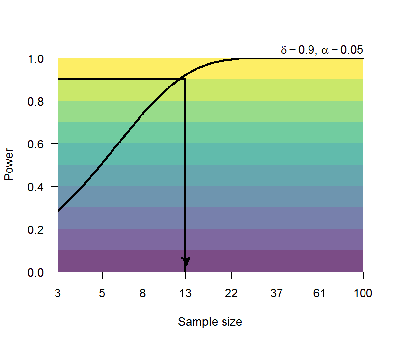
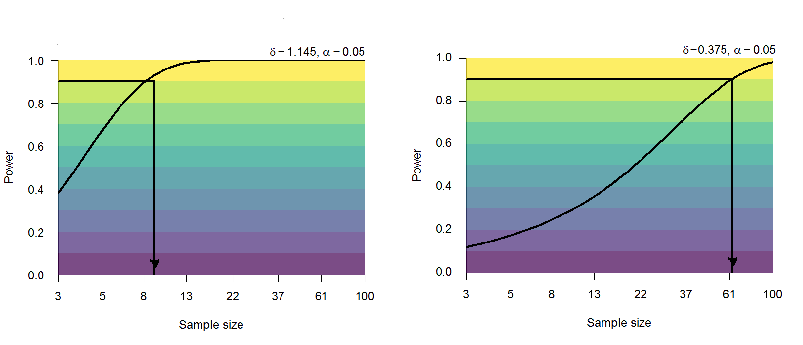
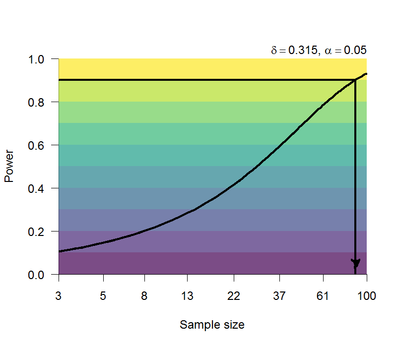

7 可重製的語言研究
本單元學習目標： (1) 比較實驗範例與 Zwaan et al. (2018) 設計的實驗程序差異； (2) 了解開源實驗平台設定、發佈及資料收集； (3) 使用開源實驗平台重現知覺實驗。
語言的心理學研究在實驗心理學的發展歷史，相對短於心理計時學與記憶研究。早期重要的研究方向來自發展更早的語言學(Linguistics)，一直到今天還是跨越心理學與語言學的研究領域。根據維基百科的條目，語言心理學(language of psychology或psycholinguistics)一詞最早出現於美國心理學家傑克布．坎特(Jacob Robert Kantor)於1936年出版的著作《語法的客觀心理學》(An Objective Psychology of Grammar)，但是到了1946年坎特的學生尼可拉斯．普洛克(Nicholas Pronko)發表論文之後，語言心理學一詞才被學術社群知悉，進而促成各種專業期刊與研討會的成立。
7.1 語言心理學概述
語言行為指理解口語或書寫文字，以及口說及書寫的表達。語言心理學研究各種語言行為相關的認知歷程與生理基礎，大致可分為四個方向，每個方向探討的主題都有對應語言學領域。四個方向包括(1)兒童如何習得語言？(2)成人如何理解語言？(3)成人如何產製語言？(4)人類如何學習母語之外的語言？
根據人類語言的分析單位，語言學已發展出與心理學密不可分的五種專業領域。首先是語音學(Phonetics)：研究人類如何發聲與辨識語音的學科。最早的語音學研究可以追溯到西元前六百年，印度教僅透過口語傳播教義，為維持正確性而發展出來的學問。今天語音學研究者必須了解人類發聲器官構造(見 圖 7.1 )，每個部位的運動如何發出人類能辨識有意義單位 – 也就是音素(phoneme)。結合生理學測量與心理學實驗設計，語音學研究者掌握人類發出及區辨的音素，以及各種語言的發音方式。
構詞學(Morphology)源於印歐語系語言的字詞結構研究，構成有意義的字詞結構基本單位稱為詞素(morpheme)。依結構與功能的差異，一種語言的詞素又分為可獨立表達意義的詞根(root)，形成屆折變化的詞幹(word stem)與詞綴(affix)。以英語字詞為例，dog與dogs都是共同推有詞根dog的詞幹，兩者差別附加空詞綴與-s詞綴。不過這種結構分類不完全適用中文，例如同學與同學們看似共有一個詞根，但是不管有沒有們，兩個詞在許多地方可以互相替換。有語言學家主張中文的構詞學，應該從複合詞(compund word)的角度定義詞素(Packard, 2000)。
語法學(Syntax)討論字詞的排列順序(word order)如何組成彼此都能理解的句子。一個句子的主要成份有主詞或主語(subject)、動詞或謂語(verb)、以及受詞或賓語(object)。每個成份必須使用合適的字詞組織，才能形成一種語言的合法句子。目前已知的人類語言，排列三種成份的順序各不相同：中文與英文都是主語-謂語-賓語；日文是主語-賓語-謂語；南島語系的多數語言是謂語-主語-賓語。
儘管語法形式殊異，語言學者諾姆·杭士基(Noam Chomsky， 圖 7.2 )在1960年代出版的著作，提出生成語法(generative grammer)的主張，認為人類心智都有一部運作機制相同的語法產生器，將要表達的句子轉換符合母語語序的外部形式，或將要理解的句子轉換為語法產生器的內部形式。此主張影響許多後來的心理學家，透過計算機模擬或認知神經科學實驗等方式，探討人類的語法認知機制。

相對於構詞學與語法學研究字詞及句子的表現形式，語義學(Semantics)研究人類如何使用語言如何負載人類的思想。基礎的語義學研究是詞彙表義功能的分類，像是區分拼寫與發音相同但意義不同的同形同音詞(Homonym)，對比意義相同但是拼寫與發音不同的同義詞(synonym)。具備詞彙知識的成人在沒有辭典的時候，如何從存在長期記憶的字詞知識，辨別出能表達當下思想的詞彙，是語言心理學研究者一直探討的課題。本單元介紹的字詞識讀實驗使用的實驗方法：詞彙判斷作業(Lexical Decision Task)，是最常用的實驗程序。字詞的形式結構與語義特性，是這類研究最常探討的獨變項。
專注一種研究方向的語言心理學研究者，都會再從上述領域選擇一個主題深入探討。這個單元僅簡單介紹語言心理學的大致輪廓，如果有興趣了解重要主題的研究歷史，有影響力的理論與研究證據，可以閱讀專業的入門教材或科普書藉，例如〈語言的力量〉(薇奧理卡‧瑪利安, 2024)。
7.2 字詞辨識
首先認識什麼是詞彙判斷作業，這個作業的名稱首見於 Meyer & Schvaneveldt (1971) 的論文，而且程序與今天語言心理學研究者熟悉的版本有些不同。Meyers與Schvaneveldt安排的字詞配對有一半是兩個有意義的單詞(真詞，例如doctor - nurse; flower - dog)，另一半是一個有意義的單詞與無意義的字母組合(假詞，例如doubt - usking)。這篇論文報告兩種實驗程序：第一種是一次呈現一個配對，參與者要判斷是否都是真詞；第二種每次先呈現配對中的真詞，再呈現另一個詞，請參與者判斷最後呈現的是真詞還是假詞。無論是那一種程序，所有配對以隨機順序呈現給參與者，參與者在不到兩秒的時限之內，要做出正確判斷。
Meyer & Schvaneveldt (1971) 安排的真詞配對有部分是有關聯性的單詞(associative words)，例如doctor - nurse，butter - bread。有關聯性的單詞再區分半，其中一半在實驗中以原來的配對呈現，另一半配對裡的字詞打散重組，形成無關聯性的單詞配對。研究者假設參與者判斷有關聯性的單詞配對，做出反應的時間會明顯少於無關聯性的單詞配對。他們報告的實驗結果符合這個假設，特別是先後呈現程序的實驗結果，從此被稱關聯性促發效應(Associative priming effect)，或者語義促發效應(Semantic priming effect)。隨著詞彙網路(lexical network)的理論與技術進展，語言心理學研究者採用更嚴謹的規格操作單詞配對的關聯性，語義促發效應已經變成各領域心理學都有興趣的課題。
Zwaan et al. (2018) 的再現研究使用配對字詞先後呈現的程序，也是今天語言心理學研究最常使用的程序。他們選用的真詞來自 Nelson et al. (2004) 建立的單詞自由聯想常模：這份常模累積數百位大學生以某個字詞(例如doctor)聯想到相關字詞(例如nurse)的人數比例，測量字詞配對之間的關聯性強度。就以 Zwaan et al. (2018) 的再現實驗來說，他們挑選的120項配對平均關聯性強度有.65。至於假詞，今日英文詞彙判斷作業比起1970年代有較高的要求，基本需要是可發音，與真詞的構造不能有太大的差異，因此有研究者開發假詞資料庫，提供語言心理學實驗研究，例如 Zwaan et al. (2018) 使用 Keuleers & Brysbaert (2010) 開發的資料庫挑選實驗用的假詞。
關聯性促發效應是有關聯性的字詞配對與無關聯性的字詞配對之間反應時間差異， Zwaan et al. (2018) 的每組平均結果都有23毫秒到30毫秒的促發效應，換算於Cohen’s d都是.8以上，屬於大量級效果量(Large effect size, 參考 Cohen, 1988 )。但是如果換成中文字詞，有沒有可能以相同人數獲得接近的效果量？
在另一個使用詞彙判斷作業的經典研究， Forster & Davis (1984) 探討另一道語言心理學重要課題：較常見的字詞為何反應比較快？最可能的原因如同我們在記憶單元學到的，較多的閱讀經驗能增加覆誦的機會，越常見的字詞越容易由長期記憶提取。如果讓參與者在實驗過程有重覆答題的機會，不常見的字詞應該得到比常見字詞更明顯的反應增益，測量結果這就是 Forster & Davis (1984) 定義的重覆促發效應(Repetition priming)。
Zwaan et al. (2018) 再現 Forster & Davis (1984) 的第三個實驗，安排兩個階段的詞彙判斷作業，以第二階段呈現的字詞反應時間，比較第一階段有呈現與沒有呈現的反應時間差異，測量三種字詞的重覆促發效應：常見的高頻真詞(Hige frequency words)；不常見的低頻真詞(Low frequency words)；以及假詞(nonwords)。高頻真詞與低頻真詞來自 New et al. (2007) 的字詞出現次數統計資料庫：每百萬個字詞樣本裡，選出的高頻真詞平均出現248次，低頻真詞平均出現1.22次。
與 (Forster-19844?) 的結果相比， Zwaan et al. (2018) 測得的重覆促發效應少於前者：高頻真詞~ 30毫秒對比10毫秒；低頻真詞~ 63毫秒對比45毫秒。不過換算為效果量，低頻真詞的重覆促發效應(1.11)明顯高出高頻真詞的效應(0.39)一個量級，所以還是一項成功的再現成果。
7.3 句子理解
各種語言使用的詞彙數目有限，但是人類有能力產生無限多條句子，而且擁有相同詞彙知識的人都能理解 – 如果不算特別設計的謎語或文體。杭士基的生成語法理論推動認知科學革命之後，語法結構如何影響句子理解的認知歷程，一直是許多認知心理學家的研究主題。例如 Yang et al. (2010) 運用腦電圖紀錄中文人士理解有子句的句子過程中，處理主語解析型子句：老師介紹喜愛畢卡索的那位畫家，與處理賓語解析型子句：老師介紹畢卡索喜愛的那位畫家之間的關鍵時段腦電位高峰。
除了語法學能建立可做實驗驗證的語言心理學假設，另有一種取向好奇人類是否以圖像認知理解句子表達的意義。 Zwaan et al. (2002) 改良傳統的句圖比對作業，比較讀者閱讀一條句子之後，接著判斷圖片中的物件是否為句子提到的物件。圖片中的物件可能呈現符合句子描述的形態，也可能呈現不符合的形態，如 圖 7.3 。後續研究穩定發現，符合描述形態的圖片之反應時間中位數，顯著少於不符合描述形態的圖片。這段反應時間差異，今天被稱為形態模擬效應(Shape simulation effect)。

7.4 語言心理學研究的再現與重製
語言心理學的重要理論與研究方法源於美國心理學與語言學，前述字詞辨識與句子理解實驗都是首見於以英語人士為參與者研究，有穩定再現結果的後續研究也是來自英語研究團隊。 Zwaan et al. (2018) 設計的再現實驗也是招募英語人士。如果要使用其他語言進行研究，除了需要考慮樣本數，關鍵變項的操作需要使用規模相近的字詞資料庫挑選刺激字詞，才能確保獨變項操作與英語研究一致，例如聯想詞常模；字詞出現次數資料庫。
除了參與者人數，刺激字詞數目也是語言心理學實驗的樣本數需考慮的條件。根本原因是刺激字詞數目也會決定實驗效應的型一與型二錯誤率，詳細說明可參考附錄####。這裡以 Zwaan et al. (2018) 設定的字詞數目，討論三個實驗的達成預定結果有高考驗力的參與者人數。
關聯性促發效應的Cohen’s d至少有0.8，是容易再現的實驗效果。如 圖 7.4 的估計，大約13人就能得到90%考驗力的再現結果。

Forster & Davis (1984) 的第三項實驗發現低頻詞的重覆促發效應是高頻詞的一倍以上，根據 Zwaan et al. (2018) 的實驗結果推測，如 圖 7.5 所示，低頻字詞的重覆促發效應達到90%考驗力的人數，只有高頻字詞的人數約六分之一。語言心理學研究存在許多與字詞出現次數有明顯的交互作用的效應，因此任何理論與假設，都要考慮字詞頻次如何影響研究目標的關鍵效應。

Zwaan et al. (2018) 重現的形態模擬效應效果量範圍在0.3到0.6之間，屬於中量級的效果量，以最低的0.315估計再現實驗所需人數 ( 圖 7.6 )，可知再現研究要重新發現同樣的結果且達到90%的考驗力，必須要累積80人以上的樣本。

習作
(nelsonUniversitySouthFlorida2004?) 收集的關聯性常模收錄4000條英文字詞與聯想詞的資料，每條字詞的聯想詞來自平均149位參與者的回答，統計每個聯想詞被提及的次數。請查閱文獻，了解目前有沒有規模相近的聯想詞常模？如果沒有相當規模的常模，要如何收集字詞關聯性的測量資料？
SUBTLEX-US(nelsonUniversitySouthFlorida2004?)統計收錄的字詞在百萬次語料之間的出現次數，這份資料庫的語料來源是什麼？如何估計收錄字詞的出現次數？中文字詞有沒有類似規模的資料庫？如何查找符合實驗操作的字詞？
形態模擬效應實驗的完整材料可由原作者的後續研究取得。如果要改造為中文實驗，你認為只翻譯英文句子為中文句子，還是操作一致的實驗嗎？實驗材料、作業程序、還有參與者背景等，這些條件應該如何考慮？
在每項實驗的
Raw Data表單裡，那些欄位是真正用於分析的依變項資料？那些欄位是獨變項？那些是計算參與者平均反應的必要欄位？為何有部分資料是極端值？這份公開資料處理極端值的方式是什麼？
關聯性促發效果與重覆促發效果的原始論文都有報告其他實驗，形態模擬效應實驗還有其他類似的研究。請查閱文獻，舉出一個程序超過一半相同的研究，了解這項研究要檢驗的假設，變項的設計，程序與材料的設定，以及採用的分析方法。比較原始研究與你查閱的研究兩者異同。
根據三項實驗的考驗力與樣本數分析，註冊再現研究要如何規劃與執行？